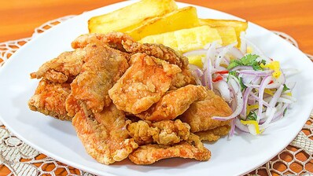

Todo plato esta a 15 soles, excepto los que ya tienen su precio escrito en la imagen!
Este plato es uno de mis favoritos, no solo por su rico sabor al ser frito, pero puede ser muy adictivo cuando se sabe preparar, quizas es tu día!
Este es un de lo platos mas conocidos en todo el Perú, y aunque no muchos la cocinen, casi todos saben como hacerlo, pero este plato te dejara con ganas de más!
Este es otro plato tipico de Perú, puede que no se vea bien desde aqui, pero si lo pruebas cambiaras de parecer!
Este plato que puedes encontrar en cualquier mercado, es tan delicioso, que su textura es abrazadora por todos los ingredientes que tiene, pero recuerda que consumir mucha grasa es malo para la salud, se le recomienda no comer seguido, por lo menos 1 vez a la semana en nuestro restaurante!
Este plato es el mejor para comer al paso, cuando no se tiene tiempo, pero aun asi, no se deje engañar que es delicioso y si convina con cremas mucho mejor!
Este plato también es uno de los mejores para comer al paso, o cuando se quiere probar algo dulce y muy jugoso, preferible con una Coca Cola!